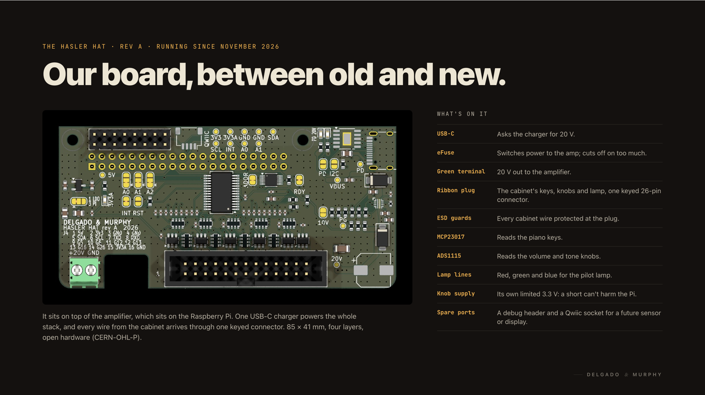

For makers & developers
Have an old radio? Build your own.
The code, the board and the guides are open. Everything we use to build a Hasler is in one repository, written so that someone else can do it too.
Building one
From an empty cabinet to a working radio
- Build guideStep by step: survey the panel, wire it, install, calibrate, hand it over.
- A new SD cardThe radio’s software from a blank card, headless, from a signed release.
- HardwareParts list, wiring, power and protection.
- The knobs’ sound effectsWhat the tone knob can do, and how a cabinet’s knobs get it.
- Multiroom and castingSnapcast, room names, AirPlay, UPnP, Bluetooth, Spotify.
- The pilot lampThe light language, and the design the code follows.
- Remote helpHow the makers look at a radio from afar, only when its owner says so.
The board
The Hasler HAT
What it does
Sits on the amplifier above a Raspberry Pi, takes 20 V over USB-C, protects it, and joins the cabinet’s keys, knobs and lamp to the Pi through one ribbon cable.
How it is made
A KiCad project generated from one Python file, so the netlist has a single source. Four layers, ordered and assembled at JLCPCB.
Read more


The software
One program, many cabinets.
- ContributingCode layout, tests, and how a cabinet’s panel is described.
- Over-the-air updatesSigned releases, installing at rest, stepping back by itself.
- ReleasingHow a version is built, signed, tried on Bench and promoted to Stable.
- ChangelogEvery version, in plain words.
- ReleasesWhat changed in each version, for owners.
- Home Assistant integrationThe radio as a device: media player, volume, standby, updates. Installs with HACS.
- Cabinet descriptionsEach cabinet’s panel as one YAML file: the Hasler HM, the Excelsior.
Licences
Open, and saying so precisely.
The code is MIT. The moOde patch is GPL-3.0-or-later, because it changes moOde. The HAT’s hardware design is CERN-OHL-P-2.0. Everything a release bundles is listed in the third-party notices.
This site uses the Fraunces and JetBrains Mono fonts under the SIL Open Font License 1.1 (Fraunces, JetBrains Mono).